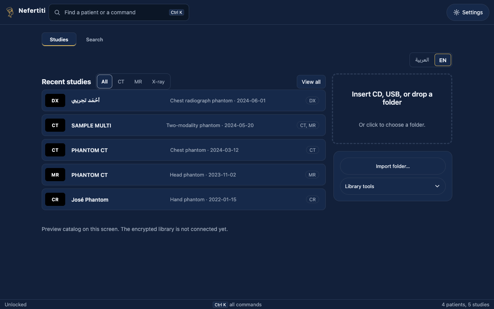
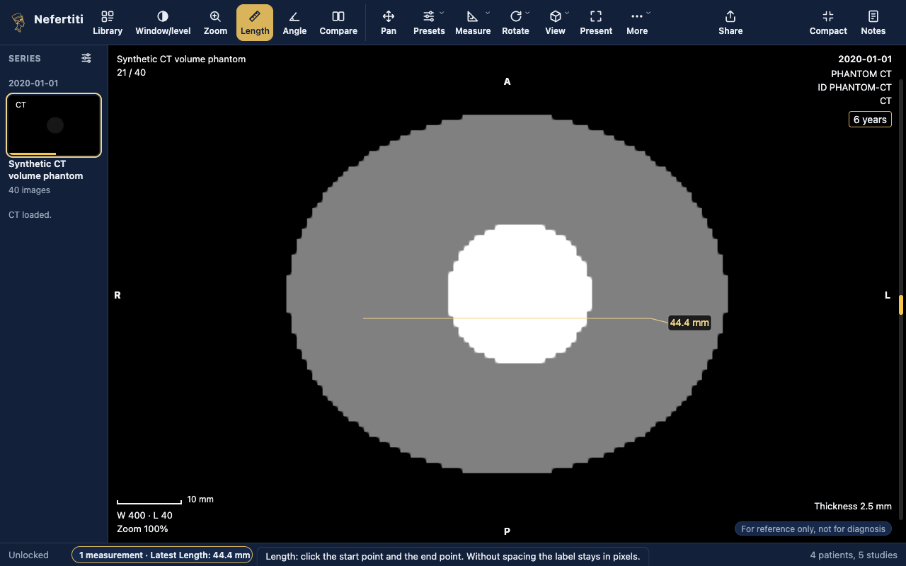
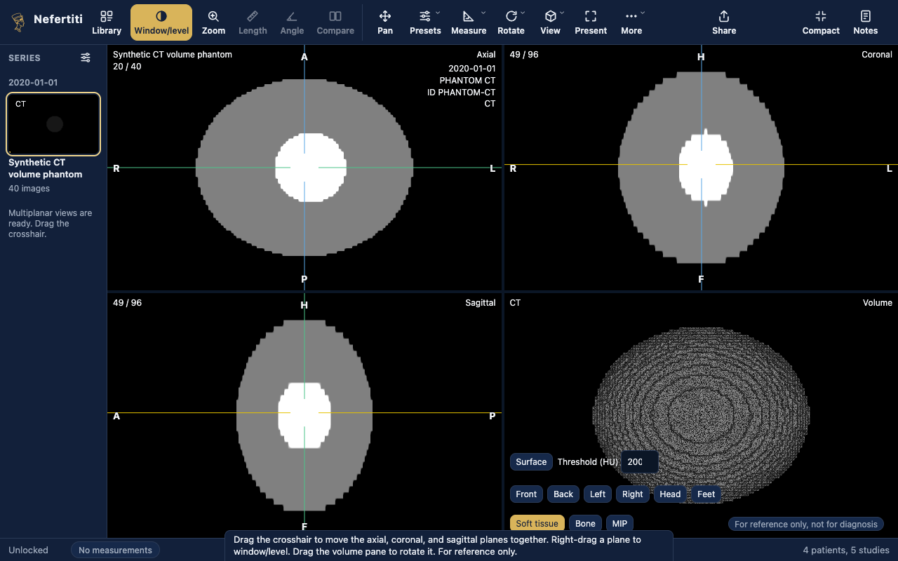
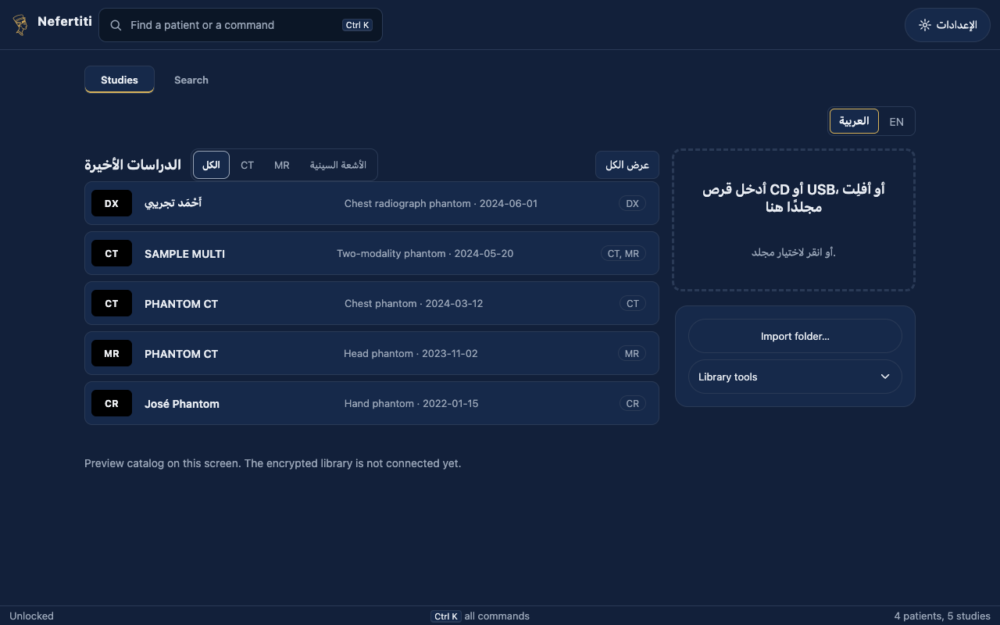

يفتح الأشعة المقطعية والرنين المغناطيسي والأشعة السينية من قرص أو USB أو مجلد أو ملف ZIP — ويعمل بالكامل دون اتصال.
يتلقى الجرّاحون والأخصائيون صور المرضى غالبًا على قرص يتعذّر فتحه. صُمّم نفرتيتي لهذا المكتب: العرض والقياس ومقارنة الزيارات والاحتفاظ بنسخة خاصة. من إنشاء د. عمرو كزاز.
للاستئناس فقط، وليس للتشخيص. نفرتيتي ليس جهازًا طبيًا، ولم يُعتمد أو يُسجَّل لدى أي جهة تنظيمية، بما في ذلك هيئة الدواء المصرية والهيئة العامة للغذاء والدواء السعودية. يجب اتخاذ القرارات السريرية بأنظمة معتمدة وعلى يد أشخاص مؤهلين.
عارض لسطح المكتب للقرص أو ذاكرة USB التي يحضرها المريض إلى العيادة التخصصية الخاصة — ومنها جراحة العظام وجراحة الأعصاب في مصر والمملكة العربية السعودية.
يفتح الدراسة، ويحفظ مكتبة خاصة مشفّرة على الجهاز، ويتيح عرض الدراسات وقياسها ومقارنتها. يعمل دون اتصال: لا اتصالات شبكية ولا تتبّع ولا تحليلات ولا فحص للتحديثات. الصور الأصلية لا تُغيَّر؛ تُحفظ القياسات والملاحظات مع الدراسة.
يحتوي هذا الموقع على ملفات التثبيت فقط. الشيفرة المصدرية مملوكة وغير منشورة. نفرتيتي مشروع مستقل، ولا يحتوي على أي كود من Horos أو OsiriX، وغير تابع لأي منهما.
الميزات
جولة موجزة لما يمكن للبرنامج أن يفعله. يحمل كل قياس جملة «للاستئناس فقط، وليس للتشخيص».
العرض
فتح دراسات DICOM من قرص أو ذاكرة USB أو مجلد (يُقرأ DICOMDIR إن وُجد، وإلا يُمسح المجلد بحثًا عن الملفات). يمكن أيضًا إسقاط مجلد على النافذة أو استخدام «فتح بواسطة» في النظام.
نافذة التباين والمستوى (Window/Level)، بما في ذلك السحب بالزر الأيمن ومفتاح W، مع إعدادات جاهزة.
تكبير وتحريك وإعادة ضبط العرض (القياسات تبقى).
تدوير إلى اليمين، وقلب أفقي وعمودي.
التنقّل في المكدس بعجلة الفأرة أو لوحة المفاتيح، وتشغيل أو إيقاف العرض المتتابع (cine) للسلسلة متعددة الإطارات.
وضع العرض (Present) يُظهر الصورة وحدها ويُخفي الأسماء. يتوفر كذلك ملء الشاشة.
لوحة أوامر (Ctrl+K) تسرد الأوامر بالاسم. نقرة يمين قصيرة تفتح حلقة اختيارات.
التخطيط والمقارنة والمتابعة
صورة واحدة أو اثنتان أو أربع على الشاشة (المفاتيح 1 و2 و4).
المقارنة تضع صورتين جنبًا إلى جنب (1×2). ربط التمرير يبدأ مطفأً؛ فعّله لتحريك الصورتين معًا. النقر مع Shift يعلّم النقطة نفسها على الصورة الأخرى.
مقارنة المتابعة: افتح مريضًا ثم اختر دراستين مؤرختين تحت «الدراسات حسب التاريخ» لمقارنة زيارة أقدم بأخرى أحدث.
المعايرة تُذكر دائمًا. إن لم يكن للصورة مقياس صالح يُعرض الطول بالبكسل ويُوسم «غير معاير» — ولا يختلق البرنامج ملّيمترات.
في الأشعة السينية العادية قد يكون المقياس مكبّرًا، وتظهر عبارة «قد يكون مكبّرًا». تتيح المعايرة ضبط المقياس من جسم معروف الحجم.
زاوية كوب هي الزاوية الأصغر، من 0 إلى 90 درجة.
القياسات بقدر ما تسمح به جودة الفحص والمقياس. هي للاستئناس فقط، وليس للتشخيص، وليست لتخطيط زرعة أو تحديد حجمها أو اختيار عملية.
المستويات متعددة الاتجاهات (MPR)
للأشعة المقطعية التي يمكن أن تكوّن حجمًا، يعرض «عرض → MPR» المستويات المحوري والإكليلي والسهمي ولوحة الحجم.
يتوفر مستوى مائل واحد في لوحة الحجم: «تدوير» يديره (من −180 إلى 180 درجة)، و«إمالة» يميّله (حتى 80 درجة في أي اتجاه)، و«تربيع» يعيده إلى المستوى المحوري. لا يوجد مستوى منحنٍ.
الطول أو الزاوية على المستوى هي المسافة في فضاء المريض، بالملّيمتر أو بالدرجات.
لا تُعرض المستويات لمكدس مائل أو لشرائح غير متساوية التباعد؛ وتبقى صور المستوى الثنائي صالحة. كثير من أشعة الرأس كذلك.
تحتاج المستويات أيضًا إلى دعم WebGL2. إن تعذّر إنشاء عرض حجمي على هذا الجهاز تبقى مكدس الصور الثنائية متاحًا.
يعيد نفرتيتي بناء الشرائح الثنائية والمستويات المتعامدة وعرضًا ثلاثي الأبعاد من سلسلة هي أصلًا مجموعة صور. لا يعيد بناء البيانات الخام من جهاز التصوير.
النموذج العظمي ثلاثي الأبعاد
يمكن بناء سطح عظمي من أشعة مقطعية (وليس من الرنين المغناطيسي)، بعد اختيار نقطة البداية والضغط على «بناء النموذج». لا يُبنى شيء حتى تطلب ذلك.
الأرقام الوحيدة على النموذج هي مسافة وزاوية وحجم صندوق القطعة (طول × عرض × ارتفاع). لا يُظهر حجم العظم أو القطعة كحجم فراغي.
يمكن إظهار القطع أو إخفاؤها أو ضمّها أو إزالتها أو إعادة تلوينها أو شطرها بنقرتين. تُختار النقاط يدويًا؛ لا يوجد معلم تلقائي ولا ذكاء اصطناعي.
الأشعة المقطعية الكبيرة جدًا تُبنى بتفاصيل أقل فقط عند الضغط على «البناء بتفاصيل أقل». الأشعة المائلة غير مدعومة بعد للنموذج؛ وتبقى الصور الثنائية صالحة.
يمكن حفظ القطع الظاهرة في ملف STL واحد، فقط عند نقرك. الملف غير محمي بكلمة مرور، ولا يحمل اسم مريض أو رقم هوية أو تاريخًا، وليس خطة جراحية أو قالبًا أو دليلًا. ما يزال زر التصدير هذا يحتاج قراءة تنظيمية قبل أن يشمله الإصدار 0.1.0.
مكتبة خاصة
مكتبة محلية قابلة للبحث: اسم المريض ورقم الهوية والتاريخ ونوع الفحص. تعمل الأسماء بالعربية وبالحروف اللاتينية.
يمكن ترتيب الدراسات وفتحها وإضافة ملاحظات وحذفها. لا يُشغَّل أبدًا ملف SETUP.EXE أو autorun.inf على القرص. الدراسة المستوردة مرتين تظهر مرة واحدة.
المكتبة مشفّرة على القرص. يحتفظ بالمفتاح حساب ويندوز أو سلسلة مفاتيح ماك. لا توجد كلمة مرور للتطبيق افتراضيًا.
عند التشغيل الأول تحفظ مفتاح الاستعادة على ورق. وهو الطريق الوحيد للعودة إن ضاع ملف المفتاح أو نُسي الرقم السري.
نسخ احتياطي إلى مجلد أو ذاكرة USB، والتحقق من النسخة، والاستعادة. الاستعادة تستبدل المكتبة على ذلك الجهاز. النسخة الاحتياطية تحتوي ملفات مشفّرة فقط.
المشاركة والتصدير وPDF والصور المفتاحية
يمكن أن يكتب التصدير نسخة DICOM أصلية، أو نسخة منزوعة الهوية، أو أرشيف ZIP محمي بكلمة مرور، فقط إلى المجلد الذي تختاره.
تتبع النسخة منزوعة الهوية الملف الأساسي لـ DICOM للوسوم التي يمكن تغييرها. تبقى تواريخ الدراسة. النص المحروق داخل الصور لا يُزال؛ ويطلب منك البرنامج تأكيد أنك راجعت ذلك.
يحفظ حفظ صورة الصورة مع قياساتها وسطر المعايرة. تضمين اسم المريض يكون مطفأً ما لم تؤشره.
يمكن أن تصنع المشاركة ملف PDF للدراسة، أو صفحة صور مفتاحية، أو فيديو للتمرير، أو شبكة صور. الملفات المشاركة تكون منزوعة الهوية افتراضيًا وتحمل جملة «للاستئناس فقط، وليس للتشخيص».
يمكن أيضًا طباعة صفحة. تُكتب الملفات حيث تختار فقط، ولا يُترك شيء في مجلد مؤقت.
الخصوصية والتشفير والرقم السري الاختياري
يعمل بالكامل دون اتصال. لا سحابة ولا حسابات ولا مزامنة ولا اتصال بنظام أرشفة صور، ولا أي اتصال شبكي داخل البرنامج.
يمكن تشغيل رقم سري اختياري من الإعدادات ← الأمان. مع الرقم السري يظهر زر قفل، ويمكن أن تُقفل المكتبة بعد 5 أو 10 (الافتراضي) أو 15 أو 30 دقيقة خمول، أو ألا تُقفل. ينتظر القفل عند الخمول إن كان استيراد أو نسخ احتياطي جاريًا، ويتوقف في وضع العرض.
الرقم السري حماية ممن يقترب من الجهاز فقط. وهو لا يوقف برنامجًا يعمل بحساب المستخدم المسجّل. أبقِ قفل شاشة نظام التشغيل (وBitLocker على ويندوز) قيد التشغيل أيضًا.
تُرفض الأرقام السهلة مثل 123456. بعد خمس محاولات خاطئة يفرض البرنامج انتظارًا. نسيان الرقم يحتاج مفتاح الاستعادة؛ وبدونه لا يمكن فتح المكتبة.
ينسخ تقرير المشكلة (الإعدادات ← مساعدة) الإصدار والنظام ورموز الأخطاء الأخيرة. لا يحتوي أسماء أو أرقام هوية أو مسارات ملفات، ولا يُرسل شيء إلى أي جهة.
الإنجليزية والعربية
الواجهة متاحة بالإنجليزية والعربية. يُحفظ اختيار اللغة عبر إعادة التشغيل.
في العربية تُعكس تخطيط الصفحة. تبقى الصور الطبية ونوافذ العرض والمستويات والنموذج الثلاثي الأبعاد والعناصر المرسومة على الصورة من اليسار إلى اليمين، فيبقى يسار المريض في الجهة نفسها من الشاشة.
النص العربي مسودة آلية وما يزال يحتاج مراجعة متحدث أصلي. قد تظهر بعض الأزرار بالإنجليزية.
الأنظمة
ويندوز 10 أو 11، 64 بت (x64)إصدار تجريبي — مثبت بنقرة واحدة. إن لم يكن Microsoft WebView2 موجودًا يمكن للمثبت المعتاد تنزيله (تتطلب هذه الخطوة اتصالًا بالشبكة). يُخطط لمثبت دون اتصال يتضمّن WebView2، لكنه ليس ضمن الإصدار التجريبي الحالي.
ماك بمعالج Intelمخطط لـ 0.1.0 — صورة قرص مخطط لها. وهي ليست ضمن الإصدار التجريبي v0.0.1.
آيبادقيد التطوير — نسخة آيباد قيد البناء. ليست جزءًا من الإصدار العام على هذا الموقع بعد، وهدف الآيباد ليس على خط المنتج الرئيسي الصادر هنا.
مثبتات لينكس وبناء ويندوز لمعالجات ARM ليست ضمن 0.1.0.
للاستئناس فقط، وليس للتشخيص.
لقطات الشاشة
التُقطت هذه الصور من شبح اصطناعي فقط. لا تُعرض أي صور لمرضى على هذا الموقع.

المكتبة تعرض المكتبة الخاصة الدراسات الحديثة. يمكن فتح قرص أو ذاكرة USB أو مجلد من هنا.

العارض والقياسات قياس طول على شبح أشعة مقطعية، بالمليمتر. للاستئناس فقط، وليس للتشخيص.

المستويات والثلاثي الأبعاد المستويات المحوري والإكليلي والسهمي، مع عرض حجم ثلاثي الأبعاد، من أشعة مقطعية يمكن بناؤها كحجم.

الواجهة العربية المكتبة بالعربية. تخطيط الصفحة معكوس؛ وتبقى الصور الطبية من اليسار إلى اليمين.
التنزيل
تُنشر ملفات التثبيت في صفحة Releases لهذا المستودع. نزّل دائمًا ملف التثبيت وملف SHA256SUMS من تلك الصفحة، ثم تحقّق من البصمة قبل تشغيل الملف.
الإصدار التجريبي الحالي هو v0.0.1، وهو مثبت ويندوز غير موقّع: Nefertiti_0.0.1_x64-setup.exe وSHA256SUMS. قد يحذّر Windows SmartScreen لأن البناء غير موقّع؛ اختر More info ثم Run anyway. ملفا ماك ومثبت WebView2 دون اتصال ليسا ضمن هذا الإصدار التجريبي.
الإصدار 0.1.0، وهو أول إصدار عام موقّع، لم يُنشر بعد. انظر الخارطة لما ينبغي إنجازه أولًا.
التحقق من التنزيل (SHA256SUMS)
يسرد SHA256SUMS بصمة SHA-256 لكل ملف تثبيت. يجب أن تطابق بصمة ملفك سطره تمامًا. إن لم تطابق فاحذف الملف ونزّله من جديد، ولا تشغّله.
عرض الصور الثنائية ونافذة التباين يستخدمان المثبت أعلاه. تحتاج العروض متعددة المستويات والثلاثية الأبعاد إلى دعم رسومي WebGL2؛ وبدونه يبقى مكدس الصور الثنائية صالحًا. إزالة البرنامج تبقي مكتبتك ما لم تحذف البيانات عمدًا.
خارطة الطريق
نحو الإصدار 0.1.0
الإصدار 0.1.0 هو أول إصدار عام موقّع. وهو لم يصدر بعد. ومن الأعمال التي ما تزال أمامه:
إكمال النموذج العظمي الثلاثي الأبعاد والتحقق منه (بما في ذلك الفحص اليدوي على الأجهزة المقصودة).
المستوى المائل (oblique MPR)، وهو مطلوب قبل 0.1.0. أما المستوى المنحني فليس مطلوبًا.
التوقيع الرقمي: مثبت ويندوز موقّع وصورة قرص لماك Intel موقّعة، حتى لا يبقى تحذير الأمان عند التشغيل الأول هو المسار المتوقع.
قراءة تنظيمية لزر تصدير STL قبل أن يشمله الإصدار 0.1.0.
ما تزال مراجعة النص العربي من متحدث أصلي مطلوبة. وينبغي إجراء مراجعة قانونية لصياغة الترخيص، ومراجعة لدى هيئة الدواء المصرية وهيئة الغذاء والدواء السعودية، قبل أي بيع أو ادّعاء سريري، وقبل الاستخدام الواسع في مصر أو المملكة العربية السعودية.
لاحقًا، بعد 0.1.0
إصدار لشبكة العيادة (وضع شبكة محلية اختياري) مخطط له فقط بعد أن يدخل 0.1.0 حيّز الاستخدام الفعلي. وسيبقى مطفأً حتى يُفعَّل.
لا يوجد اكتشاف بالذكاء الاصطناعي في البرنامج اليوم. وأي إضافة لاحقة للذكاء الاصطناعي ستبقى مطفأة افتراضيًا وستحتاج مراجعة تنظيمية أولًا. إعداد التقارير، واستضافة بيانات المرضى على السحابة، والحصول على الصور من أجهزة التصوير ليست من أهداف هذا المنتج.
الخصوصية
المقصود أن تبقى بيانات المرضى على الجهاز (وعلى نسخة USB الاحتياطية التي تنشئها). يعمل البرنامج بالكامل دون اتصال. لا يُجري أي اتصال شبكي، وليس فيه تتبّع ولا تحليلات ولا فحص للتحديثات. لا يوجد حساب ولا سحابة.
المكتبة مشفّرة على القرص. توجد الصور غير المشفّرة في الذاكرة فقط أثناء فتح المكتبة. لا يُكتب شيء غير مشفّر إلى القرص إلا عندما تصدّر أو تشارك أو تطبع أو تحفظ صورة صراحة — وعندها فقط إلى المجلد أو الملف أو الطابعة التي تختارها.
المشاركة منزوعة الهوية افتراضيًا: يظهر الاسم ورقم الهوية وتاريخ الميلاد ورقم الوصول فقط عند تأشير «تضمين بيانات المريض»، ولا يُحفظ هذا الاختيار. أسماء الملفات وبياناتها الوصفية لا تحمل بيانات المريض أو الدراسة. الصور التي قد تُظهر بيانات المريض في بكسلاتها تبدأ دون تأشير؛ والبرنامج لا يستطيع إيجاد أسماء مكتوبة داخل البكسلات.
لا يحتوي تقرير المشكلة على أسماء أو أرقام هوية أو مسارات ملفات، ولا يُرسل شيء إلى أي جهة. لا يستخدم هذا الموقع أدوات تتبّع أو تحليلات من أطراف ثالثة.
تصف هذه الملاحظات ما صُمّم البرنامج ليفعله. وهي ليست مشورة قانونية. يُرجَّح أن تكون العيادة هي المتحكم في البيانات بموجب قوانين الخصوصية السارية، وعليها التحقّق من التزاماتها، بما في ذلك قانون حماية البيانات الشخصية في مصر ونظام حماية البيانات الشخصية في المملكة العربية السعودية.
يجوز لمن يتلقى ملف تثبيت من عمرو كزاز أو من صفحة التنزيل الرسمية تثبيت تلك النسخة وتشغيلها. لا يشمل هذا الإذن نسخ البرنامج أو تعديله أو نشره أو توزيعه أو بيعه أو إجراء هندسة عكسية عليه، أو عمل مشتقات منه، دون إذن كتابي مسبق.
يُقدَّم البرنامج «كما هو» دون أي ضمان من أي نوع. انظر ملف LICENSE. مكوّنات الأطراف الثالثة المضمّنة تبقى برخصها؛ انظر NOTICE.
أسئلة شائعة
هل يمكن استخدام نفرتيتي لإجراء تشخيص؟
لا. نفرتيتي للاستئناس فقط، وليس للتشخيص. وهو ليس جهازًا طبيًا ولم يُعتمد أو يُسجَّل لدى أي جهة تنظيمية. لا تستخدمه أساسًا لتشخيص. يجب اتخاذ القرارات السريرية بأنظمة معتمدة وعلى يد أشخاص مؤهلين.
هل تغادر أي بيانات مرضى الجهاز؟
ليس من تلقاء نفسها. يعمل البرنامج دون اتصال ولا يُجري اتصالات شبكية. تغادر النسخ الجهاز فقط عندما تصدّر أو تشارك أو تطبع أو تحفظ صورة، وإلى الوجهة التي تختارها فقط. الملفات المشاركة منزوعة الهوية افتراضيًا.
هل الشيفرة المصدرية علنية؟
لا. المصدر مملوك وغير منشور. يقدّم هذا الموقع وهذا المستودع ملفات التثبيت والترخيص وإشعارات الأطراف الثالثة فقط.
لماذا يحذّر ويندوز عند فتح المثبت؟
الإصدار التجريبي v0.0.1 غير موقّع. قد يحذّر Windows SmartScreen؛ اختر More info ثم Run anyway بعد التحقّق من بصمة SHA-256. المثبتات الموقّعة مخطط لها في 0.1.0.
هل يوجد تنزيل لماك أو لآيباد؟
ليس في الإصدار التجريبي الحالي. صورة قرص موقّعة لأجهزة ماك بمعالج Intel مخطط لها في 0.1.0. نسخة آيباد قيد التطوير ولم تُنشر هنا بعد.
هل يجب تعيين رقم سري؟
لا. عند التشغيل الأول يمكنك اختيار رقم سري، أو اختيار «هذا حاسوبي الشخصي: بلا رقم سري». يمكن تغيير ذلك لاحقًا من الإعدادات ← الأمان. الملفات مشفّرة على القرص في الحالتين. إن كان آخرون يستطيعون الجلوس إلى الجهاز ففعّل رقمًا سريًا.
هل يقيس النموذج العظمي الثلاثي الأبعاد حجمًا فراغيًا؟
لا. الأرقام الوحيدة على النموذج هي مسافة وزاوية وحجم صندوق القطعة. لا يستخدم ذكاءً اصطناعيًا. وهو للاستئناس فقط، وليس للتشخيص، ولا يُبنى إلا من الأشعة المقطعية. الأشعة المائلة غير مدعومة بعد للمستويات أو للنموذج؛ وتبقى الصور الثنائية صالحة.
هل توجد واجهة عربية؟
نعم. يمكن تبديل اللغة إلى العربية. يُعكس التخطيط؛ ولا تُعكس الصور الطبية. النص العربي مسودة آلية تنتظر مراجعة متحدث أصلي، وقد تبقى بعض التسميات بالإنجليزية.
ماذا لو لم تتطابق البصمة؟
احذف الملف ونزّله من جديد من صفحة Releases الرسمية. لا تشغّل ملفًا لا تطابق بصمته ملف SHA256SUMS.
عن البرنامج والاعتمادات
من إنشاء د. عمرو كزاز. أنشأ د. عمرو كزاز برنامج نفرتيتي وطوّره ليكون عارض DICOM لسطح المكتب للعيادات التخصصية الخاصة، بما في ذلك العيادات في مصر والمملكة العربية السعودية.
بُني العارض على غلاف سطح مكتب Tauri 2 ومكتبة Cornerstone3D. مكوّنات الأطراف الثالثة تبقى برخصها، وهي مذكورة في NOTICE.